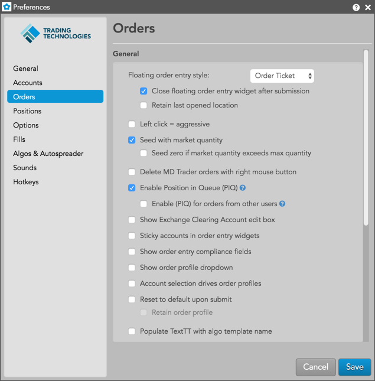
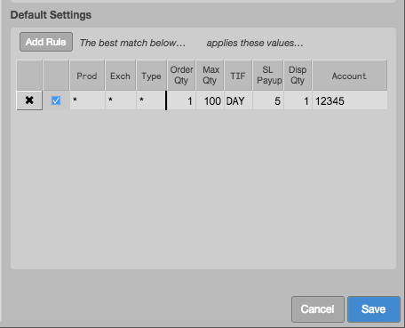
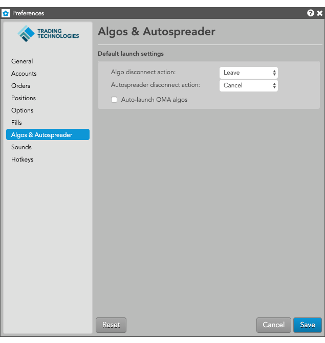
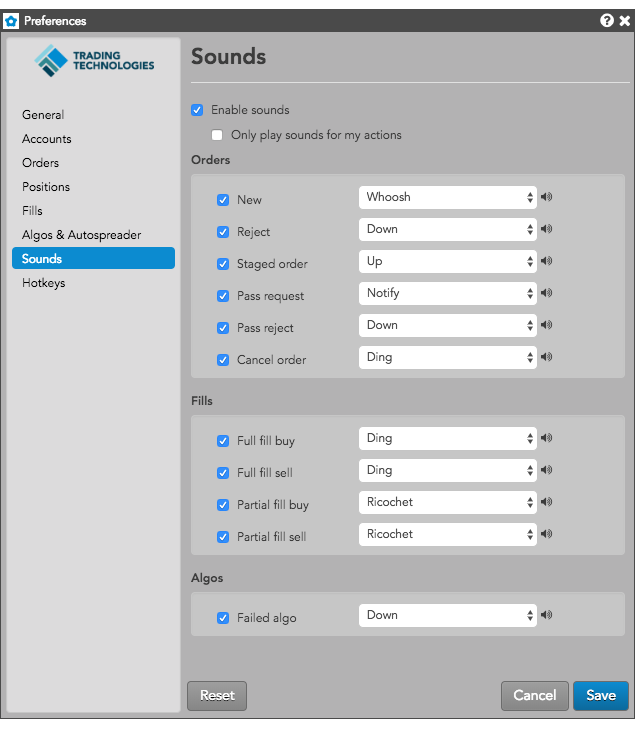
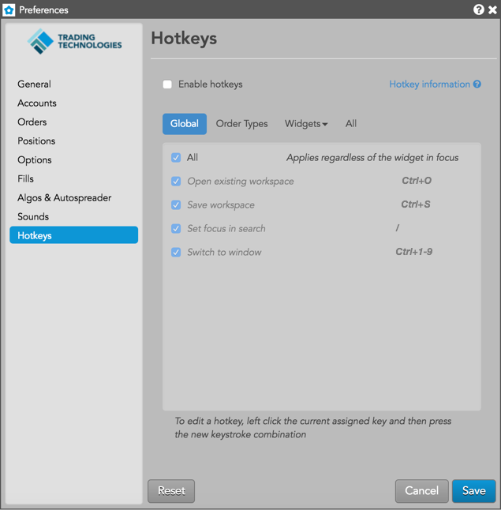
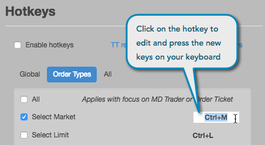

Accounts

Click the Accounts tab to view your routable accounts. Accounts are downloaded from the Setup database, and the account and exchange data displayed in Preferences is read-only. Accounts assigned to you are displayed in this section if they are configured as "Routable" in the Setup app. Any accounts configured as "Non-Routing" are not displayed.
Using a pair of radio buttons in the
Routable Accounts section, you can select one of following viewing options:
When the Account view is selected, a table is displayed with accounts in the first column, and exchange connections that each account is assigned to shown in the third column. User-defined account aliases are shown in the second column when viewing by account. The Account view is displayed by default.

When the Exchange view is selected, a table is displayed with exchange connections assigned to accounts in the fist column, and a listing of each account assigned to the exchange connections in the second column. User-defined account aliases are shown in the third column when viewing by exchange. In both views, the column widths can be adjusted.

Use the Alias column in both views to enter an alias name for identifying an account. When the account list is displayed in order entry widgets, the alias name is prepended to the actual
account name in parentheses. To add or modify an alias, double-click a cell in the Alias column and enter an alias name.
Orders

Use this tab to create default preferences for each order you enter using order entry widgets.
General
| Preference |
Description |
| Floating order entry style |
Sets whether MD Trader or the Order Ticket opens as your default order entry method. |
| Close floating order entry widget after submission |
Click this checkbox to close floating order entry windows after
submitting orders. Click to enable/disable this preference. The default preference is enabled (checkbox is checked). |
| Launch floating order book using: |
Sets how you launch the floating order book using your mouse or keypad. Click to select one of the following: Middle Click, Left Click, Hover. |
| Left click = aggressive |
Seeds the order ticket to lift the offer (Buy) or hit the bid (Sell) with a left-click.
Note: This preference affects only Order Tickets with the Enable broker mode preference checked. |
| Delete MD Trader orders with right mouse button |
Swaps the left and right mouse button functionality in MD Trader. By default, this setting is disabled, so clicking the left mouse button deletes the working order and dragging working orders with the right mouse button reprices the order. When this setting is enabled, clicking the right mouse button will delete a working order and dragging a working order with the left mouse button to a new level will reprice the order. |
| Enable Position in Queue (PIQ) |
Displays how many contracts are in front of your order at any given price. Click (check) the checkbox to enable and display PIQ values when the PIQ column is shown in MD Trader®. The Enable Position in Queue (PIQ) checkbox is unchecked (disabled) by default. If this preference is disabled when the PIQ column is shown in MD Trader, each cell in the column will be blank.
Note: Position In Queue values are estimated on non-CME markets.
|
| Sticky accounts in order entry widgets |
Allows the same account to remain selected in order entry widgets after entering an order. The account also remains selected when changing instruments. For example, if you open a linked MD Trader from the Market Grid and change instruments by clicking through the grid, the account remains the same.
|
| Show order entry compliance fields |
(For MiDFID II exchanges only) Displays a CDI dropdown in MD Trader and Order Ticket widgets that allows a trader to report whether a trade is reducing risk, also referred to as a hedging trade, overriding the default value defined in Setup at order entry time. It also adds the Invest Decision, Exec Decision, and Client ID text entry fields. |
| Set Floating Order Book columns |
Sets the columns you want shown in the Floating Order Book. |
Floating Order Book columns
| Field |
Description |
| Delete (Cxl) |
Delete a single line (order) |
| Algo |
Launch an Order Management Algo (OMA) for the order |
| Contract |
{% include columns/col-contract.html %} |
| WrkQty |
{% include columns/col-ord-qty.html %} |
| Send |
Green check button appears when a change is made to the order quantity or price |
| Price |
{% include columns/col-price.html %} |
| TrigPrc |
{% include columns/col-trig-prc.html %} |
| TIF |
{% include columns/col-tif.html %} |
| Account |
{% include columns/col-account.html %} |
| Type |
{% include columns/col-type.html %} |
| Time |
The workstation time the order or action was sent. In a shared order book, if users are in different time zones, the Time field will display in the local time of the initiated workstation and will not convert to the workstation times for users in other time zones.
For synthetic and algo orders, the Time field displays the local time based on where the Algo Server is located
|
| CurrentUser |
TT user name of the trader associated with the transaction
For users who share an order book, this column allows you to determine which user submitted each order. You can also sort the orders by this column.
|
| Parent Order |
Name of the parent algo order |
| Mod |
Modify user-defined parameters for a parent algo order |
| Delete Pareent |
{% include columns/col-type.html %} |
Confirm
The preferences in this section allow you to enable order confirmations. All preferences are unchecked
(disabled) by default.
| Preference |
Description |
| Cancel all |
Enables order confirmation for when you click "Cancel All" in the Order Book widget. |
| Modifications to working orders |
Enables order confirmation for changes to working orders in the Order Book widget. |
| Submission of orders with qty greater than |
Enables order confirmation for orders that exceed the configured quantity. Double-click or use the up/down arrows in the text box to enter a quantity. |
Default Settings
This section provides you the ability to pre-define "best match" rules that can seed desired account and order parameters in order entry widgets. When a rule is enabled in this section, the Trade app will apply its order default preferences to each submitted order based on the product(s), exchange(s), product type(s), and
account selected.

Click the Add Rule button to create an order default rule. After clicking the button, a new row appears and displays asterisks for the Prod, Exch and Type cells.
Each row displays an X button that you can click to remove the row and delete the rule. Each row also has a checkbox that you can check to apply the rule to your orders. Double-click the cell in each column to select or enter a value.
Note: You cannot have the same combination of product, exchange, and product type in multiple rules.
When adding a rule, you can set the following:
| Preference |
Description |
| Prod |
Sets a product. The Market Explorer opens in this cell to allow you to find and select a product. Multiple products can be selected using Ctrl+click or Ctrl+Shift+click. Default product preference is *
(all products). |
| Exch |
Sets the exchange. The drop-down list in this cell shows exchanges assigned to your account(s). Default exchange preference is * (all exchanges).
|
| Type |
Sets a product type. If you select an exchange, only product types supported by that exchange are listed. Select one of the following:
- FUT — Futures
- SPRD — Spreads
- OPT — Options
- STRA — Strategies
- CS — Common Stock
- INDEX — Indexes
- SPOT — Spot markets
- TBOND — Treasury Bonds
Default product type is * (all product types).
|
| Order Qty |
Sets the default order quantity.
Note: As of version 15.11.4, the default order quantity was changed from 1 to 0 for all new rules. However, it did not changes the default quantity for existing rules; you must update existing rules if you want to set 0 for the default order quantity.
|
| Max Qty |
Sets the default maximum order quantity. |
| TIF |
Sets a default time-in force (TIF) order restriction to apply to each order. Select a TIF
from the drop-down list:
- DAY — Day orders (e.g., GTD)
- GTC — Good Til Cancel
- FOK — Fill Or Kill
- IOC — Immediate Or Cancel
The default TIF is Day.
|
| SL Payup |
Sets the default Stop-Limit order payup ticks quantity. |
| Display Quantity |
Sets a default display quantity for disclosed-quantity orders (e.g., Iceberg). This value cannot exceed the default order quantity.
Note: As of version 15.11.4, the default display quantity was changed from 1 to 0 for all new rules. However, it did not changes the default quantity for existing rules; you must update existing rules if you want to set 0 for the default display quantity.
|
| Account |
Sets the account to use for the rule. Select an account from the drop-down list.
|
Positions

| Preference |
Description |
| Display spread/strategy positions |
Display the positions for parent spread and strategy orders in a Positions widget. |
Fills

| Preference |
Description |
| Alert on new fills |
Displays a Fill Alerts widget when new fills are received. |
| Limit daily fill downloads to 5000 |
(Enabled by default) Uncheck to remove the daily limit for downloading fills.
Note that if you elect to remove the current restriction, an extreme numbers of fills could negatively impact memory usage and degrade application performance.
|
Algos & Autospreader

| Preference |
Description |
| Algo disconnect action |
Select the default action to take when the client that launched the Algo loses its connection to TT:
- Leave: Algo orders to remain working. All algo child orders continue to be managed by the Algo server.
- Pause: Algo orders are paused. Child order behavior is dependent on the configuration of each individual Order Block.
- Cancel: Algo orders are canceled. Child order behavior is dependent on the configuration of each individual Order Block.
|
| Autospreader disconnect action |
Select the default action to take when the client that submitted the Autospreader order loses its connection to TT:
- Leave: Autospreader orders remain working. Quote and hedge orders continue to be managed by the Autospreader server.
- Cancel: Autospreader orders are canceled which in turn cancels quote orders, but hedge orders remain working.
|
Sounds

- Enable Sounds: Click the check box to enable your sound preferences. Uncheck to disable.
- Only play sounds for my actions: Click the check box to play sounds resulting only from your own actions.
Orders
| Preference |
Description |
| New |
Sets a sound alert when a new order is entered, either manually or by an automated tool like Autospreader. |
| Reject |
Sets a sound alert when an order is rejected. |
| Failed Algo |
Sets a sound alert when an algo fails. |
| Staged Order |
Sets a sound alert when a staged order is submitted. |
Fills
| Preference |
Description |
| Full Fill Buy |
Sets a sound alert when a Buy order is fully filled. |
| Full Fill Sell |
Sets a sound alert when a Sell order is fully filled. |
| Partial Fill Buy |
Sets a sound alert when a Buy order is partially filled. |
| Partial Fill Sell |
Sets a sound alert when a Sell order is partially filled. |
Hotkeys

Hotkeys settings are stored at the user-level and apply across all workspaces.
- Enable Hotkeys — Click the check box to enable hotkeys. Uncheck to disable.
- Hotkey Information — Lists keys that are reserved for TT functionality and cannot be used when creating your own custom hotkeys. Refer to Hotkey Restrictions. Also lists the following keys that can be assigned as single hotkeys:
- Function keys F1 through F11
- Left bracket [
- Right bracket ]
- Equals =
- Minus -
- Plus +
- Asterisk *
- Left arrow
- Right arrow
- Period .
- Comma ,
Note: Commands displayed in italics and grayed out are hard-coded and cannot be customized.
Global
This option lists global hotkeys. Click this option and check the check box next to a hotkey to enable it. Uncheck to disable.
| Preference |
Description |
| All |
Selects all hotkeys. |
| (TT) Open Existing Workspace |
Opens a dialog box to select and open one of your existing workspaces. Default hotkey is Ctrl+O. Enabled by default. |
| (TT) Save Workspace |
Saves the open workspace in focus. Default hotkey is Ctrl+S. Enabled by default. |
| (TT) Set Focus in Search |
Places the focus in the Search field on the tool bar. Default hotkey is / (forward slash). Enabled by default. |
| (TT) Switch to window |
Switches windows within a single workspace. Press Ctrl + (the window number) to switch to that
window. Default hotkey is Ctrl+1-9. Enabled by default. |
Order Types
This option lists hotkeys for order types. Click this option and check the check box next to a hotkey to enable it. Uncheck to disable.
| Preference |
Description |
| All |
Applies all Order Types hotkeys when either an MD Trader or Order Ticket has focus. |
| Select Market |
Selects the native Market order type if supported at the exchange. Enabled by default. The default hotkey is Ctrl+M. |
| Select Limit |
Selects the native Limit order type if supported at the exchange. The default hotkey is Ctrl+L. |
| Select Iceberg |
Selects the native Iceberg order type if supported at the exchange. The default hotkey is Ctrl+I. |
| Select Market to Limit |
Selects the native Market-to-Limit order type if supported at the exchange. The default hotkey is Ctrl+Alt+L. |
| Select Stop Market |
Selects the native Stop Market order type if supported at the exchange. The default hotkey is Ctrl+Alt+M. |
| Select Stop Limit |
Selects the native Stop Limit order type if supported at the exchange. The default hotkey is
Ctrl+Alt+S |
|
| Select OCO (native) |
Selects the native OCO order type if supported at the exchange. The default hotkey is Ctrl+Alt+O. |
| Select Cross |
Selects the native Cross order type if supported at the exchange. The default hotkey is Ctrl+Alt+X. |
| Select Block |
Selects the native Cross order type if supported at the exchange. The default hotkey is F6. |
| Select TT Bracket |
Selects the synthetic TT Bracket order type. The default hotkey is [ (the open bracket key). |
| Select TT Iceberg |
Selects the synthetic TT Iceberg order type. The default hotkey is Alt+I. |
| Select TT If Touched |
Selects the synthetic TT If Touched order type. The default hotkey is Alt+D. |
| Select TT OCO |
Selects the synthetic TT OCO order type. The default hotkey is Alt+O. |
| Select TT Retry |
Selects the synthetic TT Retry order type. The default hotkey is Alt+R. |
| Select TT Stop |
Selects the synthetic TT Stop order type. The default hotkey is F2. |
| Select TT Timed Sliced |
Selects the synthetic TT Timed Sliced order type. The default hotkey is Alt+S. |
| Select TT Timed |
Selects the synthetic TT Timed order type. The default hotkey is Alt+E. |
| Select TT Trailing Limit |
Selects the synthetic TT Trailing Limit order type. The default hotkey is Alt+L. |
| Select TT With A Tick |
Selects the synthetic TT With A Tick order type. The default hotkey is Alt+W. |
Widgets
This option lists hotkeys for specific widgets. Click this options and select a widget name to see its hotkey shortcuts. Available widgets are:
- Chart
- MD Trader
- Market Grid
- Options Chain
All
This option lists all available hotkeys. Check the check box next to a hotkey to enable it.
Uncheck to disable.
- All — Enables or disables all available hotkey options. Check the check box to enable all hotkeys. Uncheck this option to disable.
- Display Instrument Data — Displays the instrument, price, and risk P/L data for an instrument selected in a widget and allows you to export the data to a CSV file.
Hotkey Restrictions
When assigning hotkeys, the following restrictions apply:
- Hotkeys must be unique per widget in TT. That is, the same keystroke combination could be assigned to different actions as long as those actions are in different widgets.
- The following hotkeys are reserved in TT and cannot be assigned to single keystrokes or used as hard-coded commands within widgets:
- Spacebar
- Page Up (PgUp)
- Page Down (PgDn)
- Esc
- Tab
- Caps Lock
- Shift
- Insert
- Delete
- Enter
- Backspace
- Print Screen
- Pause/Break
- Scroll Lock
- Num Lock
- Home
- End
- Windows key
- Backslash \
- Ctrl
- Alt
- Back tick ` (the ~ tilde key)
- F12
- Alpha (letter) or numeric (number) keys cannot be used as single hotkeys. However, letter and number keys can be assigned when included with at least one control key (e.g., Ctrl+A).
- Assigned keys are interpreted as case insensitive.
- Multiple non-control keys cannot be combined as a hotkey assignment, e.g., you cannot use “A+B” as a hotkey assignment.
Note: Commands displayed in italics and grayed out are hard-coded and cannot be customized.
The following are hotkey shortcuts available for specific widgets in the Trade application:
- Chart
- All: Enables all MD Trader hotkeys
- Open contract search: Single alpha character
- Open contract search: Single numeric
- Esc: Close contract search
- MD Trader
- All: Enables all MD Trader hotkeys
- Center price ladder: Spacebar
- Scroll price ladder up: Up arrow
- Scroll price ladder down: Down arrow
- Scroll price ladder up a page: PgUp
- Scroll price ladder down a page: PgDn
- Launch Chart: Alt+C
- Launch Time and Sales: Alt+T
- Show/hide order pane: Alt+P
- Open contract search: Single alpha
- Set order quantity: Single numeric
- Close contract search: Esc
- Display contract information: Ctrl+Shift+X
- Reset/Restore VAP (toggle): Shift+R
- Market Grid
- All: Enables all Market Grid hotkeys
- Display contract information: Ctrl+Shift+X
- Options Chain
- All: Enables all Options Chain hotkeys
- Center strike prices: Spacebar
- Set spread type to Strip: Alt+S
- Set spread type to Calendar: Alt+C
- Set spread type to Combo: Alt+B
- Set spread type to Combo Hedged: Alt+0
- Set spread type to Fly: Alt+Y
- Set spread type to custom (hold key): Windows key
- Submit custom spread (release key): Windows key
- Abandon spread: Esc
- Center strike prices: Space
- RFQ Viewer
- Open contract search: Single Alphanumeric
Hotkey Reassignment
You can modify an existing hotkey by reassigning the command to a custom keystroke.
To modify a hotkey, click the currently assigned hotkey and press the new keystroke combination.

Note: You'll receive an error message if your custom hotkey is already assigned to a different command, or if the hotkey is restricted within TT. If there's a conflict, you will have the option to keep the custom hotkey assignment.